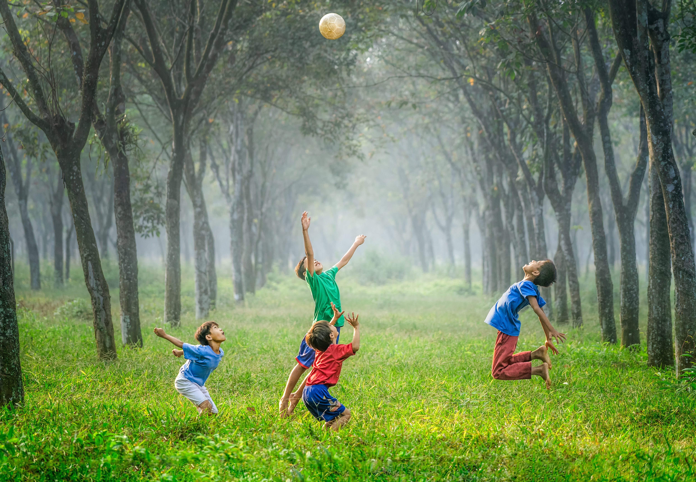

Who We Will Serve
On Eagles Wings Farm will be able to provide housing, give stability, support, counsel, care, and a loving Christian family environment to children, both boys and girls, anywhere from 0-18 years of age. Our children will come from many walks of life including: the foster care system, in police protective custody, teen motherhood, or having struggles in their current home situation. We will also work with the families of the children in need of care by offering opportunities for family counseling and to learn life skills.
Teen Mothers
In the Main Home we will house at least one teenage mother who is either pregnant or already has a baby. We will provide a loving, family support system for mother and child. They will be provided schooling, home and life training skills to help prepare them for life in society. They will stay in an apartment-like setting for up to one year and then will have the option to move into our transitional home in the city.
Foster Children
We will house children that are in foster care, in need of short term placement or emergency shelter (ppc/police protective custody). We will provide short term care for babies on up to teenagers. There is a huge shortage of foster and shelter beds in the KC Metro area due to the high volume of children in these situations. We hope to alleviate situations where children have to be taken three hours or more outside of the KC metro area due to this lack of housing. In the Main Home we will house children who are in need of short term care. We will also have two dedicated homes set apart for long term foster children.
Sibling Groups
One of the toughest moments a group of siblings will face as they enter into custody is being split apart from each other due to most foster homes only being able to take in one or two children at a time. One of our homes will be dedicated specifically for sibling groups.
At-Risk Youth
We will have a home dedicated to children who are having struggles at home or in life and might be in danger of being placed into custody. Our hope will be to provide a lifeline to families who feel like they are out of options
Youth Groups
Opportunities will be provided for youth with a focus on inner city children and church youth groups, to come out for a retreat week or weekend. This will be done on a small scale, 5-10 children, so that strong relationships can be built between the group. Youth will have an opportunity to get “back to the basics” without electronics, spending much time outdoors participating in different activities such as camping and horseback riding while learning Christian and life principals through the activities.
Programs
Shelter

On Eagles Wings Farm will be a place of refuge and hope for children who are enduring hardships in life. We will provide a place where children can come and visit or live in a Christ-centered family environment where they will be surrounded by love, encouragement, family counseling and Christian morals and principals. Children who come to stay for long or short term will have full interaction with the farm environment where they will learn how to care for and ride horses, plant and reap at harvest time, devise ways to harness energy, acquire life and business skills and produce their own products to sell at the market.
Leadership and Skills Training
Children and youth will also be encouraged in their talents, whether it is in sports, music, dance, or whatever talent or skill they find joy in. They will be given daily tasks that will prepare them for the world such as cooking, cleaning, engineering, taking care of siblings and solving daily problems that they might encounter when they leave the farm. But most importantly, grace, hope and love will be consistently modeled and poured into their lives through living together in a cohesive family structure.
Mentor Program

All of our children will be connected one on one with a trained volunteer mentor from within the community. Our mentors will build positive and encouraging relationships with our children through on and off-site interactions. Mentors will also play a role in helping to tutor our students with schooling if the need arises. All of our mentors will go through a training program that will help them to better connect with our children.
Parent Connection
Through our many interactions with families we have found that parents will sometimes get lost in the process. Our goal will be to provide as many avenues and resources as possible for parents to find the support that they need to overcome whatever obstacle they are struggling with. If they are willing we will provide a mentorship program where they will be connected with individuals or families that will come alongside lifewise and help support wherever possible.
Building Bridges Through Relationships
One of our main strengths the farm will be able to offer is a space for parents, children and counselors/therapists to meet that will encourage hope, restoration, renewal and healing. Instead of merely sitting in an eight by eight room staring at the walls wondering what to say to each other during visits, families and counselors will have numerous opportunities to participate in all aspects of the outdoor and farm life. Picture families learning to ride horses together, going out to a pond and reeling in some fish together, planting a garden together, going on a hike through the woods, or even riding a tractor or four-wheeler across the land. These many opportunities will open the door for restoration and renewal to take place.
Transitional Living Program
As children age out of the foster care system and leave OEWF, they will have the choice to move from the farm into a transitional living program that is housed in a four-plex in Kansas City, Kansas. There will be a host family living in one of the apartments that will help guide and direct our young adults as they transition into everyday living. They will mentor them in all areas of life pertaining to adulthood including job, finance, relational and spiritual counseling.
Equine Therapy
There is something about being around a horse. During our two years running an Equine Program for young men who had been previously arrested, breakthrough after breakthrough was achieved with “hardened criminals” who no one else would give a chance to. Through their many different layers of interactions with the horses, vast improvements were seen in many areas including: the ability to identify and cope with feelings, communication skills, overcoming fears and building trust. Our goal will be to build a solid Equine Therapy program at the farm that will help our children to overcome their struggles and thrive..